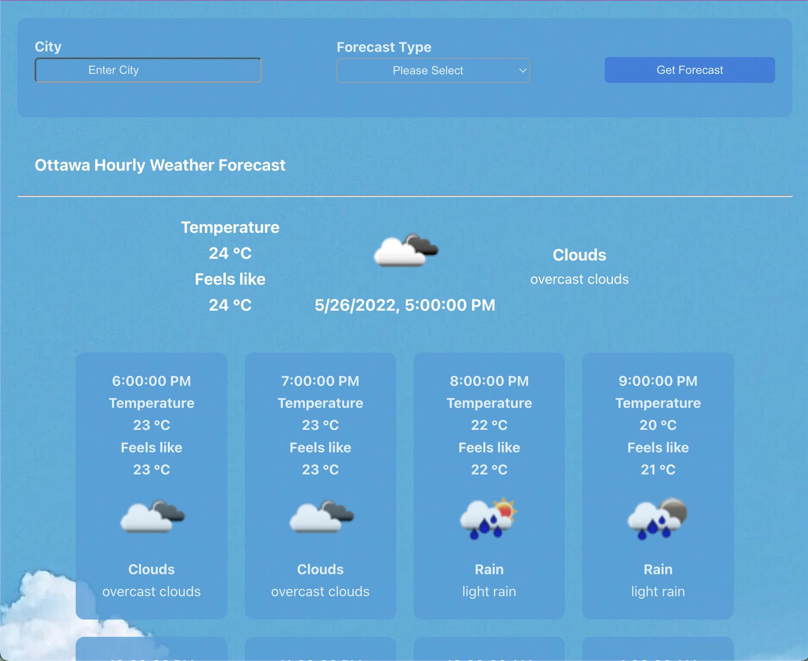
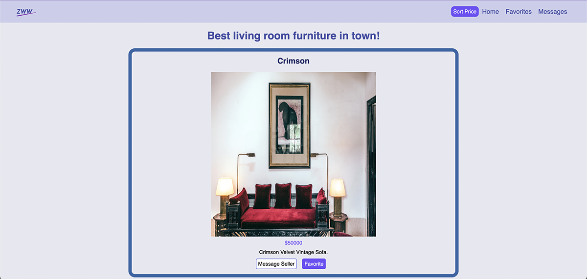

Zoey Qin
Frontend Web Developer
Aspiring full-stack web developer with the ability to learn new skills quickly.
Featured Projects
Projects built with a wide range of frontend and backend stacks such as ReactJs, CSS, SCSS, HTML, Express, PSQL, and API.
WeatherForecast
A weather search app built with ReactJS, SASS, Express, and OpenWeatherMap Weather API. A user should be able to specify the name of a city through the input field and the type of weather forecast (hourly or daily) through the drop down menu they want.
NutriAdvisor

Designed and built a versatile app for people who want to achieve goals such as losing/maintaining/gaining weight and a healthy lifestyle with the help of coaches.
Listing Website
Designed and built a multipage listing website that sells couches and provides different features for users and admins.
Work Experience
Project Manager
Association for New Canadians
Feb. 2019 – Jul. 2020
One year experience working as a Project Manager at a immigrant service organization with proven abilities to implement project deliverables and obtain results ontime.
Policy and Research Officer
Coalition of Persons with Disabilities
Apr. 2018 – Feb. 2019
One year experience working as a Policy and Research Officer at a disability advocacy organization with strong knowledge of accessibility and universal design.